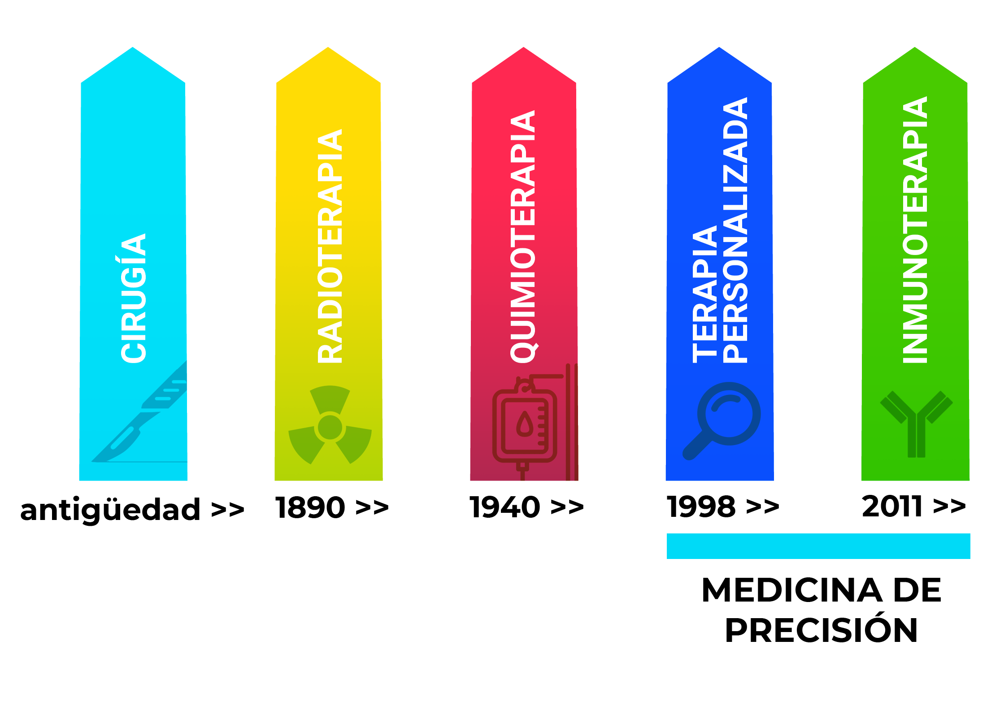
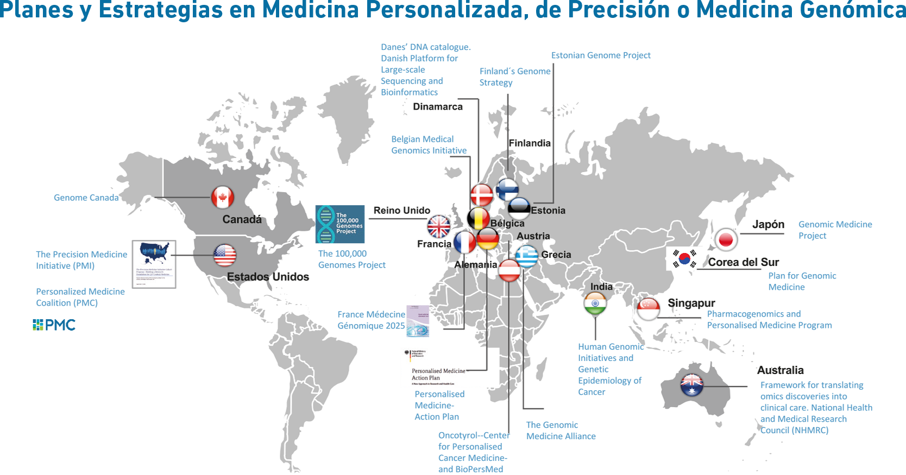
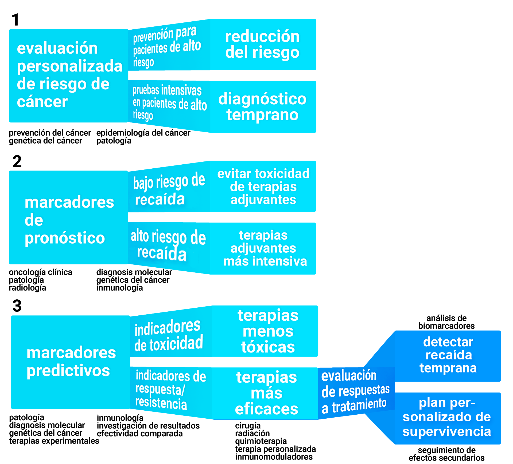

La definición de Medicina de Precisión no está estandarizada en la actualidad, aunque se acepta que es el tratamiento con fármacos adaptado a las características individuales de cada paciente. Esta definición, del National Research Council (NRC) de los EEUU, implica la capacidad de clasificar a los pacientes en subpoblaciones que difieren en su respuesta a un determinado tratamiento, aunque no supone la generación literal de medicamentos o tecnologías médicas que sean únicas para cada individuo.
De modo similar, la Sociedad Europea de Oncología Médica (ESMO) define la Medicina Personalizada, de un modo general, como la medicina dirigida a dar a los pacientes el mejor tratamiento según su historia clínica, su estado fisiológico y las características moleculares de sus tumores. De esta forma, es posible aplicar intervenciones terapéuticas en aquellos grupos de pacientes que tendrán un beneficio de las mismas, evitando el gasto innecesario y posibles efectos secundarios a aquellos enfermos que no se benefician del mismo.
La Oncología Personalizada nace de la necesidad de encontrar terapias más eficaces basadas en el genotipo del paciente o el perfil molecular del tumor, así como en las características del microambiente tumoral. El principio de la medicina personalizada es dirigir el agente terapéutico contra los rasgos moleculares que son diferentes entre un tumor maligno y los tejidos normales. Estas diferencias moleculares serán las potenciales dianas terapéuticas. La diana terapéutica ideal está habitualmente implicada en el crecimiento celular y confiere a la célula tumoral ventajas de supervivencia.
Las terapias personalizadas se asocian con un mejor perfil de toxicidad que los tratamientos convencionales con citostáticos. Por dicho motivo, es fundamental conocer las características moleculares de un tumor maligno mediante el estudio del ADN o ARN tumoral, estudio de proteínas implicadas en las distintas vías moleculares de proliferación tumoral y en el metabolismo celular, su microambiente, y a su vez conocer las características genómicas del paciente que puedan estar relacionadas con su sensibilidad a terapias dirigidas.
Los últimos avances en la inmunoterapia del cáncer han desencadenado un progreso sustancial en el tratamiento de muchas enfermedades oncológicas, como el melanoma, el cáncer de pulmón, el cáncer renal, colorrectal, gástrico, vesical o el tumor de células de Merckel. La inmunoterapia está dirigida contra antígenos de la superficie de las células tumorales, y a menudo su empleo está dirigido a los casos cuyas neoplasias expresan estos antígenos, o marcadores relacionados.
Desde nuestro punto de vista, la Medicina de Precisión supone la aplicación individualizada de fármacos que proceden bien de la terapia dirigida o bien de la inmunoterapia oncológica.
Pilares de tratamiento del cáncer:
Si consideramos la representación gráfica de los pilares de tratamiento del cáncer (cirugía, radioterapia, quimioterapia, terapias personalizadas e inmunoterapia), la Oncología de Precisión combinaría los ultimos dos pilares del tratamiento.
La Sociedad Española de Oncología Médica (SEOM), junto con otras sociedades científicas españolas, ha destacado que la Medicina de Precisión está transformando la atención a los pacientes con cáncer, proporcionando oportunidades extraordinarias para mejorar la salud pública y disminuir los costes de los sistemas de salud y ha propuesto, además, la necesidad de crear una estrategia nacional de Medicina de Precisión, como existe en otros países. En la figura siguiente se muestran ejemplos de estas estrategias.
Países en los que existe una estrategia nacional en Medicina de Precisión:
También puede considerarse que la medicina personalizada abarca distintas fases de la enfermedad:
1. Prevención: El consejo genético consiste en el asesoramiento individualizado en los portadores de mutaciones hereditarias asociadas a predisposición para desarrollo de algunos tumores. Este asesoramiento tiene como fin disminuir la incidencia de cáncer en las poblaciones de mayor riesgo y su detección precoz recomendando medidas preventivas o pautas de seguimiento individualizadas.
2. Pronóstico: Una vez diagnosticado el cáncer, la caracterización molecular aporta información acerca de la probabilidad de recaída o progresión. Su estudio aporta información en enfermedad localizada y avanzada permitiendo seleccionar un tratamiento más intensivo en aquellos enfermos de peor pronóstico o un seguimiento más estrecho en aquellos pacientes de peor pronóstico.
3. Predicción de la eficacia terapéutica: La mayoría de los biomarcadores que estudiamos actualmente son potenciales dianas terapéuticas por lo que su estudio está dirigido a valorar terapias contra dichos marcadores, siendo su determinación fundamental para asegurar el beneficio de dicho fármaco. Sin embargo, algunos biomarcadores aportan información predictiva sobre el beneficio de algunas terapias diana sin ser éstos concretamente la diana terapéutica e incluso ser predictores de ausencia de beneficio a una terapia concreta.
Papel de la medicina de precisión en las distintas fases de la enfermedad neoplásica:
